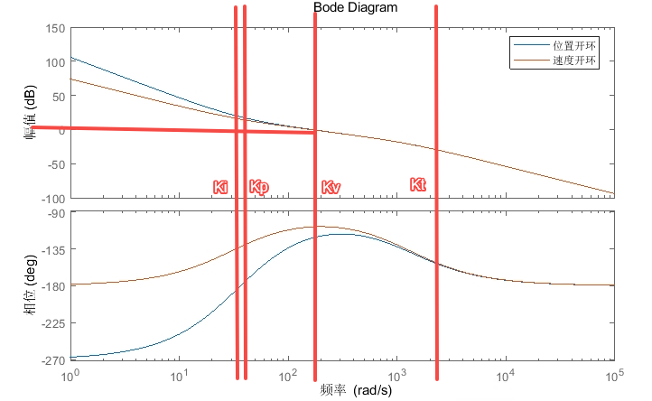
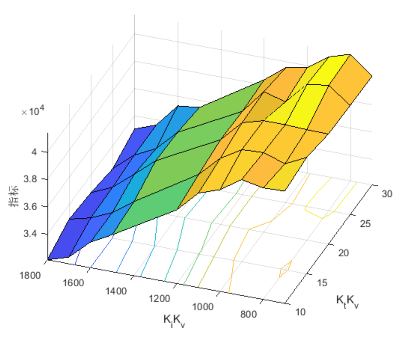
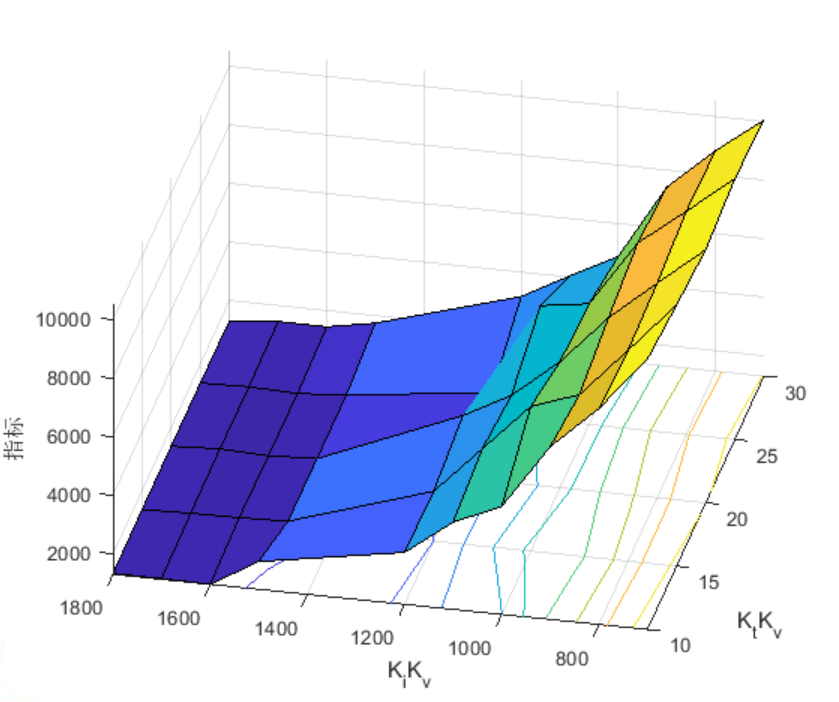
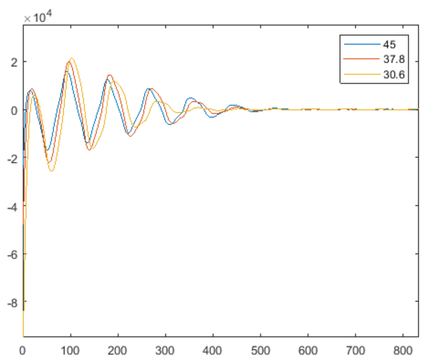
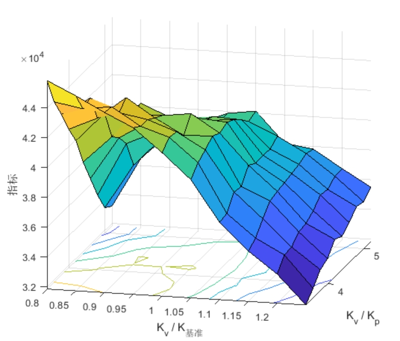
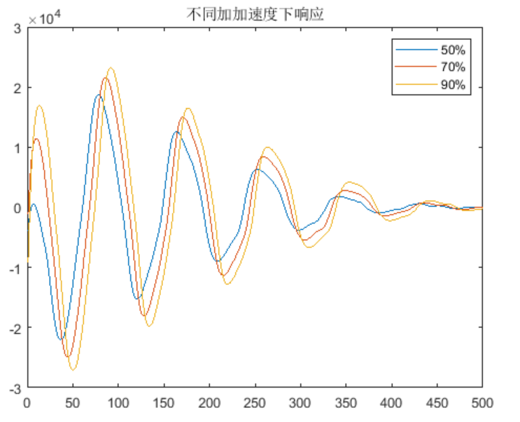
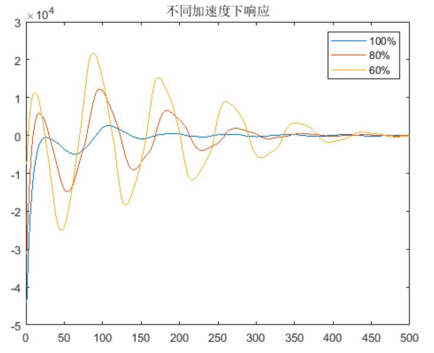
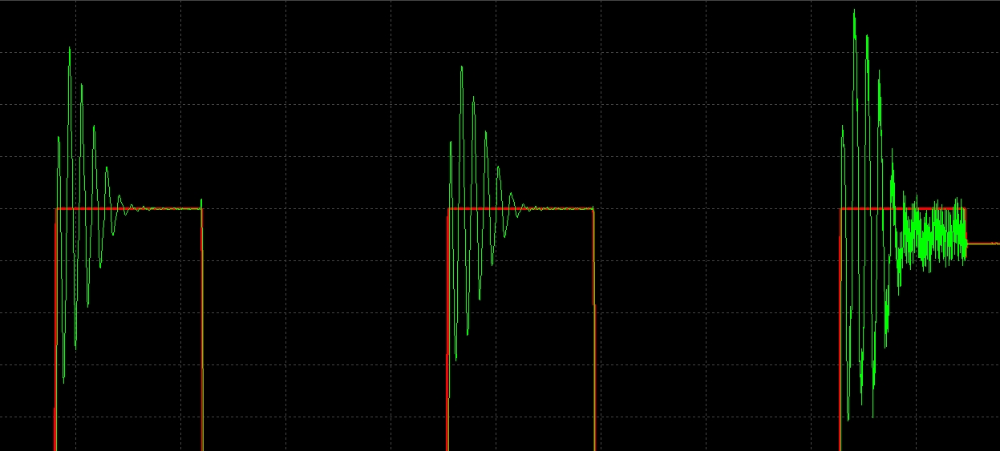
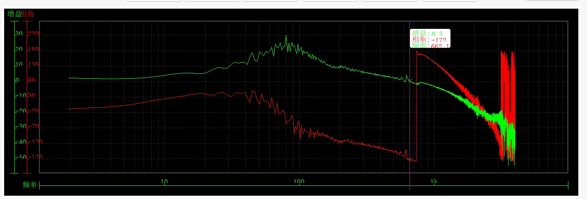

PPI参数实验结果
1. 实验条件
1.1 伺服增益参数
实验选取4个可变参数：
| 对应功能码 | 含义 | 调节方式 | |
|---|---|---|---|
| H0800 | 速度环增益 | 一阶模态的4-6倍 | |
| H0801 | 速度环积分 | ||
| H0705 | 转矩指令低通滤波 | ||
| H0802 | 位置环增益 | ||
| H0815 | 惯量比 | 实时计算，2ms频率变化 |
以零极点角度分析：

| 对应功能码 | 功能码变化范围 | 调节范围 | |
|---|---|---|---|
| H0800 | 28.8 - 43.2 | 28.8Hz-43.2Hz | |
| H0801 | 19.44 - 50 | 3.168Hz-8.172Hz | |
| H0705 | 0.28 - 0.83 | 190.98Hz-572.94Hz | |
| H0802 | 43.5 - 66.5 | 6.923Hz-10.588Hz | |
| H0815 | 设置真实值 | 大约19-26 |
1.2 工况选取
测试机型为Scara4轴S20-100Z4。
选取工况为在点1和点2两点往复运动。
负载为最大负载20Kg。
采集轴1的位置随动位置指令，位置反馈，位置随动偏差数据。
1.3 指标选取
选择超调，负调，整定时间三种指标加权，指标越小认为性能越优
2. 实验结果
2.1 Ki和Kt的影响
保持和不变。
下图分别为点1和点2处的性能表现：


结果证明：
的变化对性能几乎无影响。
越大（积分效果越弱），性能越好。
2.2 Kv影响
其他参数不变的情况下，Kv能够减小超调和负调，但会延长整定时间，因此指标中超调量与稳定时间的比例会影响结果。

2.3 Kv和Kp的影响

3. 指令
3.1 不同加加速度

不同加速度下的位置响应第一峰与第二峰的比值不同。
相位不同？
3.2 不同加速度

影响整体幅值，相对关系几乎不变。
4. 问题
突然失稳

bode图
